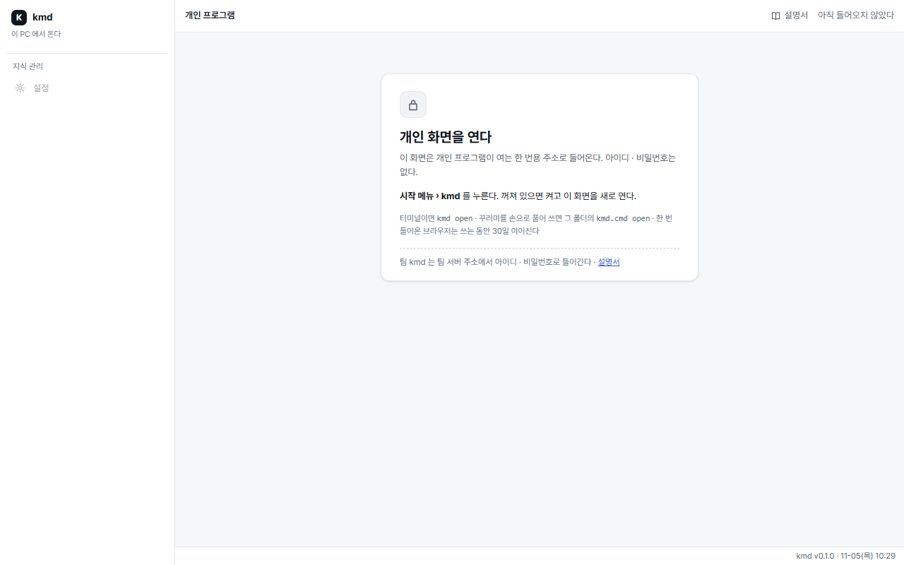
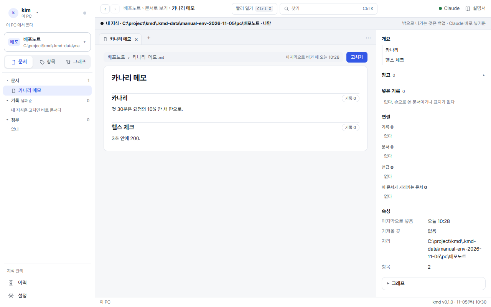
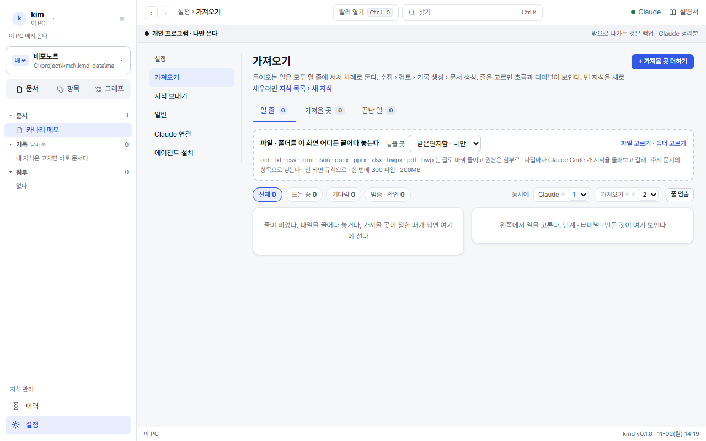
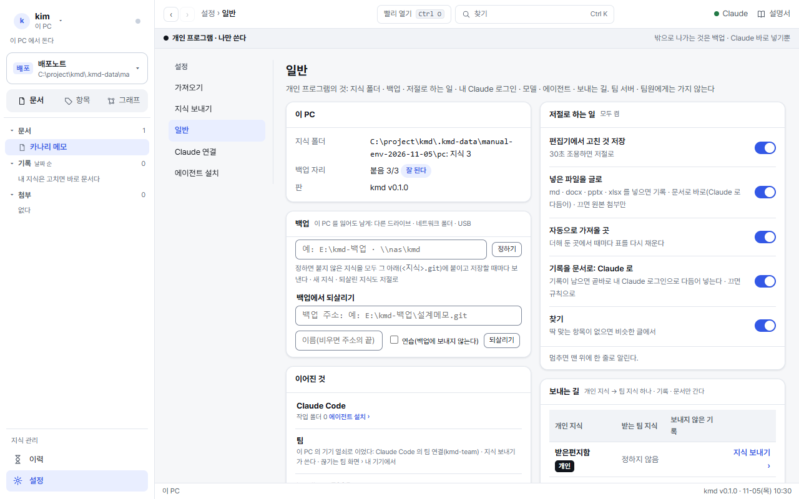
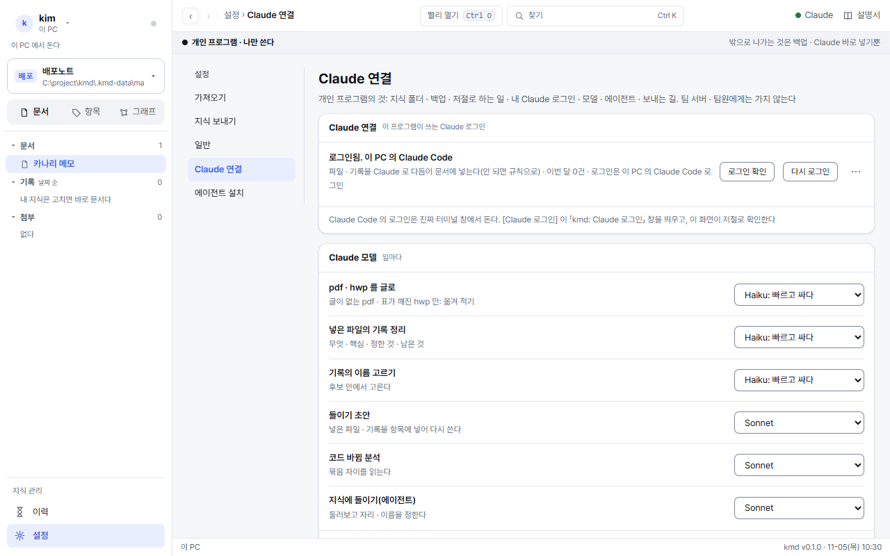
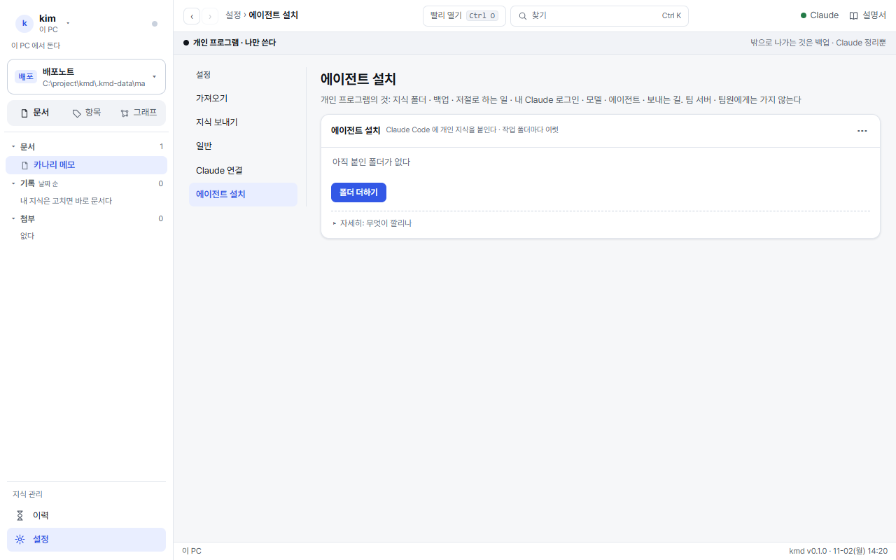
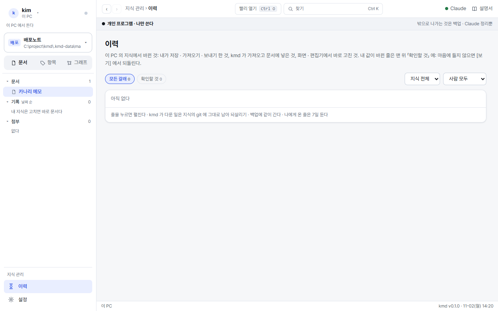

개인 프로그램
내 PC 에서 도는 kmd 다. 내 개인 지식(기본 D:\kmd)만 다루고, 팀 서버 · 팀원 · 관리자 어디에도 가지 않는다. 팀으로 가는 것은 지식 보내기로 고른 기록 · 문서뿐이다.
1설치 · 업데이트 · 팀에 잇기
팀 지식만 쓰면 개인 프로그램은 필요 없다: 팀 화면 › 설정 › 에이전트 설치의 한 줄로 작업 폴더의 Claude Code 에 팀 지식을 붙이고, 폴더째 많은 파일도 그 Claude Code 에서 넣는다(대량 넣기 kmd-team-import). 개인 지식을 쓰려면 이 프로그램을 깐다.
까는 길도, 새 판으로 올리는 길도 한 줄이다. 팀 화면 › 옆 메뉴 개인 지식 쓰기 › [한 줄 복사] → PowerShell 에 붙여 넣는다(10분 안에 한 번).

묻는 것 없이 끝나고 ✓ 넷이 찍힌다.
✓ 세웠다: 이 PC 의 내 지식 자리(D:\kmd)와 백업 자리
✓ 팀에 이었다: 내 이름으로
✓ Claude Code 에 이었다: 새로 여는 것부터
✓ 늘 켜기: PC 를 켜면 저절로 켜고, 멈추면 다시 켠다- kmd 가 없으면 팀 서버에서 PC 꾸러미를 받아
%USERPROFILE%\.kmd-app에 깔고 사용자 PATH 에kmd를 더한다(관리자 권한 없이). - 깔려 있는데 팀 서버의 판보다 옛 판이면 그 판으로 올린다. 새 판을 한 번 켜 보고 바꾸며, 안 켜지면 앞 판 그대로다. 같거나 더 새 판이면 올리지 않는다.
- 팀에 잇기는 이 PC 에 내 이름의 기기 열쇠를 만들어 Windows 자격 저장소에 둔다. 이 열쇠로 Claude Code 가 팀 지식을 읽고, 지식 보내기가 팀으로 보낸다. 열쇠는 내 자리대로만 본다.
- 내 기기: 팀에 이은 PC 목록과 [끊기]. 잃어버린 PC 는 여기서 끊는다.
2개인 화면 열기
개인 화면에는 아이디 · 비밀번호가 없다. 개인 프로그램이 여는 한 번용 주소로만 들어온다.
- 시작 메뉴 › kmd 를 누른다. 꺼져 있으면 켜고 개인 화면을 연다. 터미널이면
kmd open. - 한 번 들어온 브라우저는 쓰는 동안 이어진다(마지막으로 쓴 날부터 30일).
- 주소창에
127.0.0.1:7373만 치거나 지난 주소를 열면 아래 안내가 선다.

3개인 화면
 1234
1234- 지식 폴더 띠: 경로 · [경로 복사] · [동기화] · [바꾸기](다른 폴더를 잇는다).
- 지식 카드: 받은편지함 · 내가 만든 지식. 끌어서 순서, ⋯ 에서 메뉴에서 빼기.
- + 새 지식: 이름만, 또는 폴더 경로(그 폴더의 md · docx · pptx · xlsx 를 한 번 들인다).
- 지식 관리: 이력 · 설정(가져오기 · 지식 보내기 · 일반 · Claude 연결 · 에이전트 설치).
보는 법 · 찾기 · 고치기는 팀 화면과 같다(쓰는 사람 설명서). 다른 점은 둘이다.
- 정리가 따로 없다. 기록(세션 · 화면 · 받은 것 · 소스 코드 묶음 · 넣은 파일)은 남는 즉시 문서에 들어간다. Claude 로 다듬어 넣고(검사를 넘을 때만), 로그인이 없거나 검사를 못 넘으면 규칙으로 넣는다.
- 편집기로 md 를 직접 고쳐도 된다. 30초 조용하면 저절로 들어가고, 꺼져 있던 동안 고친 것은 켤 때 거둔다. 기록(
work/) · 이름 장부는 고치지 않는다(kmd 가 되돌리고 사본을 남긴다).

4파일 넣기 · 가져오기

파일을 끌어다 놓으면 파일마다 기록이 되고, kmd 가 Claude Code 를 띄워 세션처럼 넣는다. 일 줄의 단계 이름은 수집 › 검토 › 짓기(기록 쓰기) › 넣기(항목에 넣기)다.
- Claude Code 가 쓸 수 있는 것은 넣은 파일을 읽는 것과 그 지식의 kmd 도구뿐이다(셸 · 웹 · 다른 지식 없음).
- 한 번에 20 파일까지 Claude Code 로, 나머지는 규칙으로 넣는다. 일마다 쓰는 모델은 설정 › Claude 연결.
- 넣을 지식을 고르지 않고 처음 넣으면 받은편지함 지식이 생긴다. 이름이 걸리는 메모는 다른 개인 지식으로 옮긴다(태그
private는 옮기지 않는다). - 가져올 곳: 문서 폴더 · 소스 코드(git 주소 또는 저장소 폴더) · DB(읽기 전용). 정한 때마다 바뀐 것만 들어온다.
5지식 보내기(개인 → 팀)
 1234
1234- 보내는 지식(개인).
- 받는 지식(팀). 개인 지식마다 하나로 묶인다. 처음 한 번 정한다.
- 고를 수 있는 팀 지식: 내가 쓰기 자리 이상인 것만.
- 정하기: 바꿀 때는 새 이름을 그대로 쳐야 바뀐다.
- 탭: 기록(보내지 않은 것 먼저) · 문서(늘 통째로 · 「보낸 적 없음」 · 「보낸 뒤 고침」) · 보낸 것.
- 단추와 확인 창에 받는 지식 이름이 늘 들어간다(예: [DPMS 지식으로 2개 보내기]).
- 고른 것마다 이 PC 의 Claude(내 Claude 로그인)가 받는 팀 지식의 문서를 읽고 그 지식의 작성기준에 맞춰 기록과 항목 글을 짓는다. 팀 지식이 검사해 넘은 것은 그 순간 문서에 들어간다. 못 넘은 것은 기록에 「넣지 못함」 으로 남는다.
- 보낸 뒤 알림 · 보낸 것 탭에 「넣음 n · 넣지 못함 n」 이 보인다. 같은 것을 다시 보내면 「이미 넣음」 이고 팀에는 아무것도 쓰지 않는다.
- 넣지 못함이 남은 글은 위에 「넣지 못함」 줄이 선다: [지금 다시] 는 다시 지어 보내고 앞의 넣지 못함 기록을 바로잡는다. [버리기] 는 줄만 걷는다(팀의 기록은 남는다 · 그 지식의 지식관리자가 넣지 못함에서 고친다).
- 새 문서는 받는 지식의 지식관리자 자리일 때만 선다. 쓰기 자리면 그 글은 넣지 못함이다.
- 받는 팀 지식이 「Claude 에 보내지 않음」 이거나 내 Claude 로그인이 없으면 Claude 를 부르지 않고 기록만 보낸다(팀에서 넣지 못함).
- 보내는 일은 이 PC 의 기기 열쇠로 한다. 팀 서버에 닿지 않으면 저절로 다시 보낸다. 팀이 「저장이 너무 잦다」 고 하면 알려 준 시간만큼 쉬고 이어 보낸다. 팀 화면에는 보내기 메뉴가 없다.
6설정

Claude 로그인

- [Claude 로그인] 을 누른다작업 표시줄에 「kmd: Claude 로그인」 창(
claude auth login)이 뜨고 브라우저를 연다. - 브라우저에서 Claude 에 들어간다이 화면이 몇 초마다 저절로 확인해 「로그인됨」 으로 바뀐다([지금 확인] 도 있다).
- 모델을 고른다일마다(글로 바꾸기 · 기록 정리 · 항목 초안 · 코드 분석 · 들이기) Haiku · Sonnet · Opus.
[로그인 확인] 은 아주 작은 부르기 한 번으로 로그인이 살아 있는지 본다. 로그인이 끝났거나 한도에 닿으면 그동안 기록은 규칙으로 문서에 들어간다. 개인 지식은 내 Claude 로그인으로만 Claude 에 간다.
에이전트 설치(개인 지식)

[폴더 더하기] 또는 kmd agent add '<개인 지식>' --dir <폴더>. 그 폴더에 스킬 kmd-work · kmd-save · kmd-build, 연결 kmd(이 PC), CLAUDE.md 「이 폴더의 개인 지식」 표를 둔다. 팀 연결 · 팀 덩이는 건드리지 않는다.
| 팀 지식 | 개인 지식 | |
|---|---|---|
| 붙이는 곳 | 팀 화면 › 설정 › 에이전트 설치 | 개인 화면 › 설정 › 에이전트 설치 · kmd agent add |
| 스킬 | kmd-team-work · kmd-team-save | kmd-work · kmd-save · kmd-build |
| 연결 | kmd-team(팀 서버) | kmd(이 PC) |
| 남기면 보는 사람 | 그 팀 지식을 보는 팀 사람 | 나만 |
한 폴더에 둘 다 붙어 있고 「남겨」 만 말하면 세션이 팀인지 개인인지부터 묻는다. 「팀 지식에 남겨」 · 「내 지식에 남겨」 처럼 말하면 바로 그쪽으로.
7이력 · 값 바뀜

값이 바뀌면(예: 10% → 20%) 이력 맨 위 「값 바뀜」 에 노란 줄로 알린다. 줄마다 비교하고 되돌린다. 나에게 온 줄은 7일 둔다.
8이 PC 의 명령
| 명령 | 하는 것 |
|---|---|
kmd open | 개인 화면을 연다(꺼져 있으면 켠다). 시작 메뉴의 kmd 와 같다 |
kmd up [폴더] [--port 7373] [--no-open] | 개인 프로그램을 켠다 |
kmd pc task | 로그온 때 켜고 멈추면 다시(작업 스케줄러) · 시작 메뉴의 kmd |
kmd pc restart | 도는 개인 프로그램을 멈추고 다시 켠다 |
kmd pc update <새 판 폴더> <판> | 손으로 새 판 올리기(보통은 설치 한 줄) |
kmd agent add <개인 지식> [--dir 폴더] | 작업 폴더의 Claude Code 에 개인 지식을 더한다 |
kmd backup · kmd restore <백업 주소> | 백업 상태 · 되살리기(운영) |